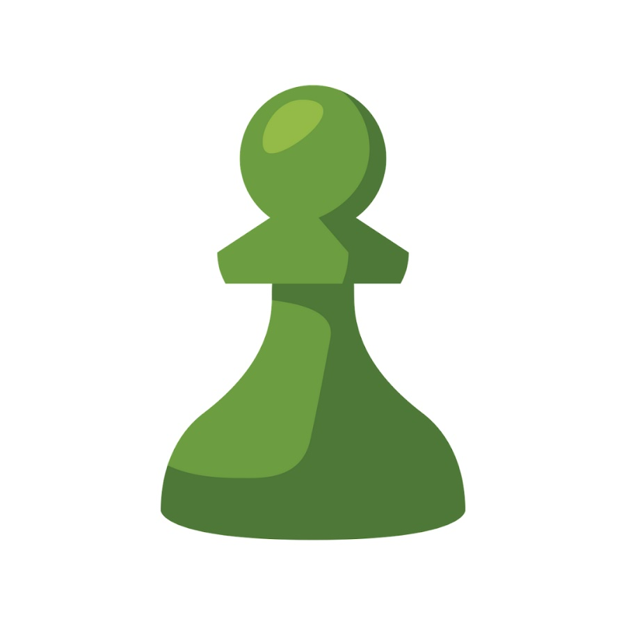

Ouvertures
Mats
Entrainement
Collection
Sites Utiles
Autre
Ouvertures
Mats
Entrainement
Collection
Sites Utiles
Autre
|
Chess.com Il s'agit du site où il y a le plus de joueurs au monde le classement élo y est soit-disant représentatif de la réalité. Vous trouverez aussi des problèmes à résoudre (5/j max. sans abonnement) qui permettent de se développer une meilleure vision de jeu. Attention, requiert un compte |

Aller au site |
|
Lichess Analysis Permet d'analyser ses parties après les avoir jouées et téléchargées sur chess.com, nombre d'anaylses par jour illimitées, montre les erreurs de la partie, les meilleurs coups, les gains potentiels... Attention, requiert un compte |

Aller au site |